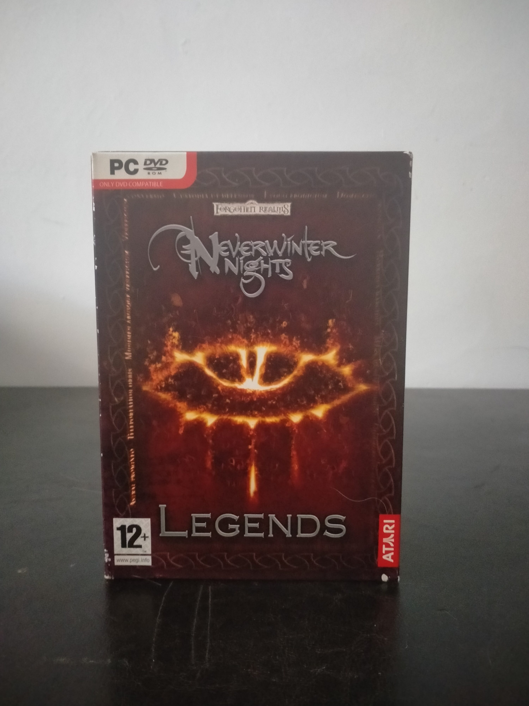

Ficha #000000
Neverwinter Nights Legends
Neverwinter Nights Legends es una recopilación física publicada por Atari en 2008 que reúne Neverwinter Nights, sus expansiones Shadows of Undrentide y Hordes of the Underdark, y Neverwinter Nights 2. Los títulos trasladan al PC las reglas de Dungeons & Dragons de tercera edición y 3.5 dentro de los Reinos Olvidados, combinando campañas narrativas, combate en tiempo real con pausa, multijugador y herramientas para crear módulos y aventuras propias. La colección documenta además la transición tecnológica entre el Aurora Engine de BioWare y el Electron Engine empleado por Obsidian Entertainment. Esta edición española en caja de cartón incorpora documentación en castellano y la banda sonora oficial de Neverwinter Nights 2, por lo que resulta especialmente relevante para preservar la etapa de expansión del rol occidental y del contenido creado por usuarios en PC.
- Formato
- DVD Case
- Plataforma
- WinXP
- Género
- Rol CRPG Fantasía Tiempo real con pausa Compilación
- Serie
- Todos Big Box
- Desarrollador
- BioWare, Obsidian Entertainment
- Distribuidor
- Atari
- EAN
- 3546430132616
Contenido de la edición
- Caja exterior de cartón
- Estuche DVD Case de Neverwinter Nights 2
- Caja Jewel Case para Neverwinter Nights y sus expansiones
- DVD-ROM de Neverwinter Nights 2
- DVD-ROM de Neverwinter Nights, Shadows of Undrentide y Hordes of the Underdark
- CD de banda sonora oficial de Neverwinter Nights 2
- Manual impreso completo de más de 140 páginas
Preservación
- Protección
- No determinado
- Formato recomendado
- Otro
- Jugable en virtualización
- Sí
La edición combina dos DVD-ROM de datos y un CD de audio. Para una preservación completa se recomienda crear imágenes ISO verificadas de ambos DVD-ROM, conservar el CD de banda sonora mediante BIN/CUE o WAV/CUE y digitalizar el manual y la caja. La instalación puede comprobarse en una máquina virtual con Windows XP y aceleración 3D compatible.